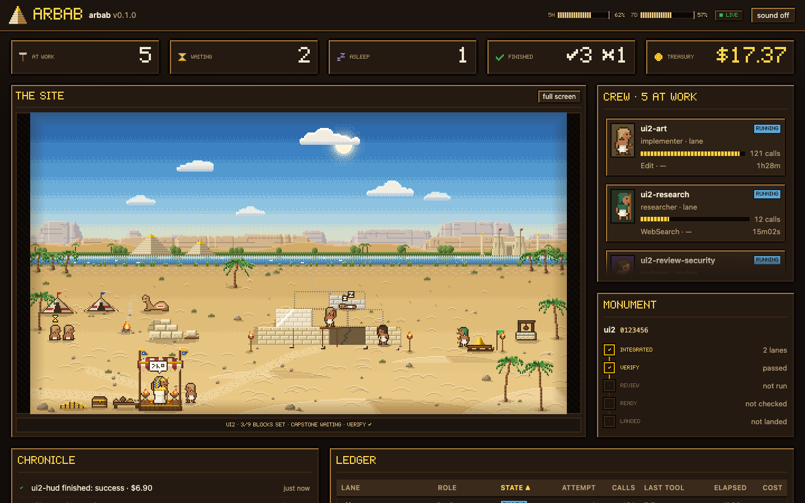
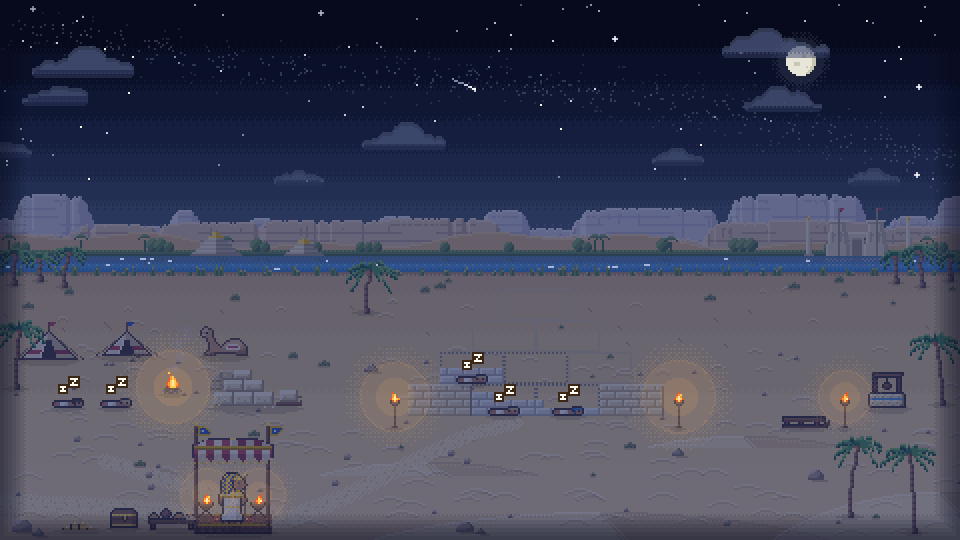

Run fenced headless Claude Code workers from your session
arbab is a Claude Code plugin: your interactive session splits a large task into lanes, and the arbab runner runs each lane as a headless Claude Code worker in its own git worktree, behind Claude Code's sandbox. It then verifies the result inside the fence, has it adversarially reviewed, and prepares a landing that happens only on your yes.
arbab ui during a real run: each lane is a worker building a pyramid, and arbab is the
foreman at the front. Each tool call sets a stone.Why
Long workflows that do not finish
Long, multi-phase work with Claude Code's built-in multi-agent tooling took days. One data-deletion job took about a day and a half, and the session limit killed it three times on the way. Older Workflow runs that hit the limit restarted from zero.
One session, shared by every agent
Agents inside one session share its context, its turn loop and its effort setting. The Workflow agents ran
at the parent session's max effort, because a workflow script cannot set effort or model per agent, and
parallel() waits for every agent before the script goes on. arbab workers are separate
processes, each with its own context, effort, budget and clock; your session handles each result as it
lands.
Does running in parallel help?
The same seven research lanes, run both ways:
| Workflow agents in one session | Headless arbab workers | |
|---|---|---|
| Lanes finished | 0 of 7 | 7 of 7 |
| Time | stopped after 73 min | 1.9–6.4 min each |
This was not a controlled benchmark: the Workflow run was stopped at 73 minutes, and 5 of the 7 headless lanes started from digests of the stopped work (the two that did not were still among the fastest). REQUIREMENTS.md §1 has every measurement and confound.
The point is not a speed-up number, but that independent work stops competing for one session's context and turn loop.
How it works
You hand your Claude Code session a task. It plans the lanes and writes their briefs; the arbab runner does everything mechanical from there, up to a landing you approve.
Four roles
- You decide. You approve each landing, review dependency changes, and waive skipped checks from your own terminal.
- Your session plans. Your Claude Code session plans, writes narrow briefs and reacts as lanes finish.
- Workers build. Headless workers each take one brief in their own worktree and fence, with a budget and a clock.
- The runner does the mechanics. Worktrees, sandbox profiles, quota holds, auto-resume, integration, fenced verification, review and landing.

arbab ui serves a live, read-only page of your lanes on 127.0.0.1: the scene, quota
gauges, the crew, the integration's progress, a chronicle and a ledger of every lane.The fence
Workers can write code. They cannot touch your working tree, your git history or your remote.
Every worker runs inside Claude Code's sandbox with dontAsk permissions and its role's exact tools;
a sandbox that cannot start is fatal, never a silent fallback.
A worker can
- Write in its own git worktree, and the few shared places Claude Code's sandbox allows, such as the per-user temp directory.
- Use its role's tools. A tool left out of the role does not exist for the worker.
-
Run only the project commands its role allows, such as
pnpm test, listed in the config'scommands. -
Read tracked templates such as
.env.examplewith shell commands, whenfence.readableEnvFileslists them. - Listen on 127.0.0.1 for tests. Only researcher lanes reach the web.
The fence refuses
- Writes outside its worktree. Your checkout is never its working directory.
-
Reading credential paths:
~/.ssh,~/.aws,.env*,*.pem,*.key, … at home and in the project. -
Writes to the repository's shared
.git. The runner, not the worker, commits, merges and creates branches. -
Background shells, in every fence. With the default
strictfence also "any code" command prefixes such as barenodeorpnpm. A lane can opt in tofence: "sandbox-auto", where the sandbox is the only wall and sandboxed Bash runs without the allowlist; background shells are still refused there. - Running its tests on your host. The gates run inside the fence, in a lane without file-editing tools, never on your host.
Refusals are counted and shown in arbab status, never
retried in secret. The full threat model is in
DESIGN.md.
Lanes that keep going
Every worker spends the same account as your session. arbab plans around that, so lanes wait instead of failing, and your session hears as each one ends.
- Quota holds come first. A launch waits in
heldwhile the five-hour window is at or above 85% or the seven-day window at or above 95%. The quota is checked before a lane takes a slot, so a held lane holds no slot. - Usage limits do not restart work. A lane that hits the limit sleeps until the reset and resumes the same session.
- Slots are machine-wide. Every project on the machine shares the slots, and
~/.arbab/machine.jsoncaps them. arbab waitnotifies the session. Run as a background call, it gives your session a task notification when a lane finishes, and the plugin's Stop hook keeps the session from ending its turn while its lanes run unwatched.arbab statussays why. Its last column,why, gives a waiting lane's reason, such asno free slotorusage limit.
What status shows
Part of the ui2 build of arbab's own page, captured before status gained its
why column, so the rows end at the quota:
lane state attempt elapsed turns calls last tool effort failed cost quota
ui2-font finished (success) 1 7m40s 18 28 Bash high 1 $1.27 5h 34% · 7d 62%
ui2-art finished (success) 1 45m37s 115 248 Bash high 12 $15.46 5h 65% · 7d 67%
ui2-wire finished (success) 1 24m59s 124 262 Bash high 11 $10.30 5h 82% · 7d 70%
ui2-fix finished (success) 1 8m21s 45 88 Bash high 3 $2.94 5h 91% · 7d 72%
ui2-review-security finished (success) 2 2m33s 23 39 Grep high 1 $1.77 5h 92% · 7d 73%
ui2-verify finished (success) 2 1m34s 4 3 Bash low 0 $0.00 5h 92% · 7d 72%
quota: 5h 93% (resets 11:20Z) · 7d 73% (resets Oct 21 10:00Z)Costs are Claude Code's API-equivalent estimates; on a subscription they are notional.

arbab ui the sky turns to dusk while launches are held and to night while the account
is rejected. Sleeping workers wait for the reset.Several sessions
Like a team's morning daily, where everyone knows who is working on what. Several Claude Code sessions can run lanes in one repository, and a landing in one does not take the others by surprise.
- Readiness names who is affected. It lists each other Claude Code session that runs
lanes or waiters in the project, or runs a runner file the landing replaces, as a
session:<id>risk. - The landing session tells them first. Before it runs
land, the skill tells each named session what the landing changes and when, with Claude Code's SendMessage.landwarns about them again as it merges: a last record, which also names sessions that appeared since. - A session that comes back is told. From arbab 0.2.2, a session returning after a pause
finds a short note on its next message of what other sessions landed while it was away, and
arbab summary --since 2hlists the landings on demand.
land name the sessions; the landing session tells
them.Examples
Real snippets from the skill's references and from the run that built arbab's own
arbab ui.
A lane file
A lane names its brief, its role and the limits it runs under, and tells the worker what its sibling lanes own.
{
"name": "w2-ratelimit",
"role": "implementer",
"brief": "lanes/w2-ratelimit.md",
"base": "main",
"effort": "high",
"budgetUsd": 8,
"wallMin": 45,
"coordination": "w2-quota-ui owns src/web/** and reads the 429 body shape. w2-billing-sync owns src/billing/**."
}A brief, excerpted
A brief is narrow and decided: the task with its choices made, the paths the lane owns, guesses kept apart from facts, and the checks it must report.
# W2 · per-tenant rate limiting for the public API (src/ratelimit)
## Task
Add a token-bucket rate limiter for the public API and wire it into the request pipeline as middleware. The design
is decided; do not revisit it.
1. `src/ratelimit/bucket.ts`: a pure token bucket. Capacity and refill rate come from the caller; time comes from
an injected clock, never from `Date.now()` inside the function.
…
## Scope
- `src/ratelimit/**` (new)
- `src/http/pipeline.ts`: the single insertion in step 4
Read anything else; change nothing else.
## Unverified
- Tenants on a plan missing from `config.rateLimits` should probably fall back to `free`. Check whether any such
plan exists in `src/billing/plans.ts` and report it in `open_questions` rather than inventing a limit.
## Acceptance
- [ ] The three modules and their tests exist, with the signatures above.
- [ ] `pnpm typecheck` exits 0.
- [ ] `pnpm test` exits 0, including the new tests.A plan
A plan orders lanes into waves by their dependencies; arbab plan check refuses overlapping
write scopes between phases that could run together.
{
"name": "m2",
"base": "main",
"defaults": { "role": "implementer", "effort": "high", "budgetUsd": 10 },
"phases": [
{ "name": "m2-plan", "brief": "lanes/m2-plan.md", "scope": ["src/plan/**"] },
{ "name": "m2-wire", "brief": "lanes/m2-wire.md", "scope": ["src/commands/plan*.ts"], "dependsOn": ["m2-plan"] }
]
}And what arbab plan check plans/ui2.json printed for the
ui2 plan:
ui2-font: ok
ui2-scene: ok
ui2-art: ok
ui2-hud: ok
ui2-wire: ok
wave 0: ui2-font, ui2-scene
wave 1: ui2-art, ui2-hud
wave 2: ui2-wire
plan ui2: okA readiness report, excerpted
The report you decide on: what was verified on the exact head, then what was skipped and every risk,
base-moved first, then the risks from other sessions the landing affects.
# Readiness report — ui2
Tier: medium · Head: `2eee5ebfb9021b5214ad39f0be0e18bc9bb6e96d` · Date: 2026-10-19
## Verified
| Check | Result |
| --- | --- |
| `verify:pnpm typecheck` | gate: exit 0 |
| `verify:pnpm test` | gate: exit 0 |
| `verify:pnpm build` | gate: exit 0 |
| `review:correctness` | lens ran, 27 paths checked |
| `review:security` | lens ran, 27 paths checked |
| `findings` | 0 confirmed, 0 refuted, 3 unverified |
…
## Risks
…Install
Install the plugin
claude plugin marketplace add ozgursagiroglu/arbab
claude plugin install arbab@arbabUpgrade
Refresh the marketplace, then update the plugin:
claude plugin marketplace update arbab
claude plugin update arbab@arbabThen restart Claude Code, or run /reload-plugins in an open
session, so it loads the new version.
Requirements
- Claude Code 2.1.290 or newer;
- Node.js 20 or newer, and git;
- macOS (tested; the fence uses Claude Code's sandbox). Linux is untested.
Then
Open Claude Code in your project, type /arbab, and ask it to check the setup first: it runs
arbab doctor. Then hand it the work: "Plan this and run it with arbab." The
README covers the project config.
FAQ
Does worker code run on my machine?
Workers run on your machine, as the unmodified claude binary under your own login, but inside
Claude Code's sandbox: writes stay in their worktree, credential paths are unreadable, and there is no network
unless the lane is a researcher. arbab never runs their code on your host outside that fence, except a
dependency install you reviewed and confirmed yourself. The gates run inside the fence; checks the fence cannot
run, such as Docker or a browser, run on the host only when you start arbab host-check in your
terminal.
Does arbab push to my remote?
Never. arbab land merges the verified integration into your base branch locally, prints the push
command and leaves it to you. Workers cannot push or deploy, and the skill lands only on your yes.
How does it use my usage limits?
Workers run under your own login, so your session and every worker spend the same five-hour and seven-day
windows: N workers use quota about N times as fast as one. Launches are held while the five-hour window is at
or above 85% or the seven-day window at or above 95% (both configurable), and maxParallel, capped
for the whole machine by ~/.arbab/machine.json, bounds how many run at once. The margin is your
headroom to read reports and land.
What happens when a worker hits a usage limit?
The lane's shepherd sleeps until the reset, plus a little jitter, and resumes the same session: the lane does
not start over. New launches stay held meanwhile. After you switch accounts, arbab quota --refresh
reads the new account's windows with one small call.
Can two sessions work in one repository?
Yes. Each session's wait and status --mine cover its own runs. When one session
prepares a landing, readiness lists every other Claude Code session whose lanes, waiters or runner the landing
affects, and the landing session tells them before it lands; land warns about them again as it
merges. land refuses when the base branch has moved past the verified integration, and from arbab
0.2.2 a session that comes back is told what other sessions landed while it was away.
Does it work on Linux?
macOS is tested: the fence uses Claude Code's sandbox. Linux is untested. One known limit: loopback services
do not work under the Linux sandbox, because allowLocalBinding has no effect there.
What does it cost to run?
arbab itself is free and MIT-licensed, with zero runtime dependencies. Workers run on your own Claude
subscription or API account, so they spend your quota like any Claude Code session. Reported costs are Claude
Code's API-equivalent estimates, notional on a subscription, and each attempt has a budget passed as
--max-budget-usd, a client-side estimate that does not cap subscription quota. For scale: arbab's
own milestones M1 to M3 took 146 worker attempts, about $225 API-equivalent, run on a subscription.